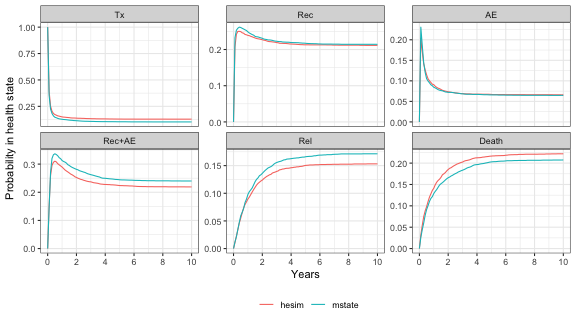

This page compares the computational performance of hesim against other R packages that have been used to develop health economic models for health technology assessment. We provide benchmarks for both a semi-Markov model and a time-inhomogeneous Markov model.
The following R packages and scripts are used. The file benchmarks.R contains the code used to run the models.
library("data.table")
library("flexsurv")
library("ggplot2")
library("heemod")
library("hesim")
library("kableExtra")
library("mstate")
source("benchmarks.R")Williams et al. (2016) adapted the mstate package to simulate parametric semi-Markov multi-state models. Here, we use simulate a 6-state model for leukemia patients following bone marrow transplantation with both hesim and mstate. Since a semi-Markov process is assumed, an individual-level simulation is used. Additional details were previously provided in a blog post.
We fit a Gompertz model, but computational performance does not differ substantially across parametric distributions. When using mstate, multi-state models are simulated using a cumulative hazard function estimated on a discrete grid, so a time step must be defined. We used a step size of 1/52 (i.e., one week) so that each time step was a week long. This produced reasonably accurate state probability estimates that were similar to those performed in continuous time with hesim (see plot below).
DIST = "gompertz"
STEP = 1/52We began by simulating “deterministic” models assuming no parameter uncertainty. Comparisons of state probabilities simulated using 5,000 patients with hesim and mstate are shown in the plot.
smb1 <- benchmark_semi_markov(n_patients = 1000, uncertainty = "none", dist = DIST,
step = STEP)
smb2 <- benchmark_semi_markov(n_patients = 5000, uncertainty = "none", dist = DIST,
step = STEP)
smb2$plot
We then performed probabilistic sensitivity analysis (PSA) and varied both the number of patients simulated and the number of draws of the parameters. Run times are reported in the table below. hesim is considerably faster and the speed advantage is most notable when a PSA is performed.
smb <- list(
smb1,
smb2,
benchmark_semi_markov(n_patients = 1000, uncertainty = "normal",
n_samples = 100, dist = DIST,
step = STEP),
benchmark_semi_markov(n_patients = 1000, uncertainty = "normal",
n_samples = 1000, dist = DIST,
step = STEP)
)
semi_markov_table(smb)| # of patients | # of PSA samples | mstate | hesim |
|---|---|---|---|
| 1000 | 1 | 9.4 seconds | 0.084 seconds |
| 5000 | 1 | 52 seconds | 0.071 seconds |
| 1000 | 100 | 22 minutes | 0.31 seconds |
| 1000 | 1000 | 3.1 hours | 2.8 seconds |
heemod is a general purpose R package for simulating Markov cohort models. We simulated the 5-state time inhomogeneous Markov model of total hip replacement from the Decision Modeling for Health Economic Evaluation textbook with hesim and heemod. Vignettes for this example are available in both packages ( hesim, heemod).
Cohort models were simulated with both packages and an individual-level model was also simulated with hesim. A single representative patient was used in the cohort model and 1000 patients were simulated in the individual-level model. The cohort models were simulated for 60 years using cycle lengths of 1 year.
mb <- list(
benchmark_markov(n_samples = 10, n_patients = 1000),
benchmark_markov(n_samples = 100, n_patients = 1000),
benchmark_markov(n_samples = 1000, n_patients = 1000)
)
markov_table(mb)| # of PSA samples | Cohort | Individual | heemod | hesim (cohort) | hesim (individual) |
|---|---|---|---|---|---|
| 10 | 1 | 1000 | 1.4 seconds | 0.098 seconds | 0.16 seconds |
| 100 | 1 | 1000 | 12 seconds | 0.13 seconds | 0.68 seconds |
| 1000 | 1 | 1000 | 1.9 minutes | 0.88 seconds | 7.4 seconds |
## R version 4.0.3 (2020-10-10)
## Platform: x86_64-apple-darwin17.0 (64-bit)
## Running under: macOS Mojave 10.14.6
##
## Matrix products: default
## BLAS: /Library/Frameworks/R.framework/Versions/4.0/Resources/lib/libRblas.dylib
## LAPACK: /Library/Frameworks/R.framework/Versions/4.0/Resources/lib/libRlapack.dylib
##
## locale:
## [1] en_US.UTF-8/en_US.UTF-8/en_US.UTF-8/C/en_US.UTF-8/en_US.UTF-8
##
## attached base packages:
## [1] stats graphics grDevices utils datasets methods base
##
## other attached packages:
## [1] mstate_0.3.1 kableExtra_1.2.1 hesim_0.4.2.9999 heemod_0.13.0
## [5] ggplot2_3.3.3 flexsurv_1.1.1 survival_3.2-7 data.table_1.13.6
## [9] knitr_1.30
##
## loaded via a namespace (and not attached):
## [1] deSolve_1.28 tidyselect_1.1.0 xfun_0.18 purrr_0.3.4
## [5] splines_4.0.3 lattice_0.20-41 colorspace_2.0-0 vctrs_0.3.6
## [9] generics_0.1.0 htmltools_0.5.0 viridisLite_0.3.0 rlang_0.4.10
## [13] pillar_1.4.7 glue_1.4.2 withr_2.3.0 RColorBrewer_1.1-2
## [17] pryr_0.1.4 muhaz_1.2.6.1 lifecycle_0.2.0 plyr_1.8.6
## [21] stringr_1.4.0 munsell_0.5.0 gtable_0.3.0 rvest_0.3.6
## [25] mvtnorm_1.1-1 mvnfast_0.2.5 codetools_0.2-16 evaluate_0.14
## [29] memoise_1.1.0 highr_0.8 Rcpp_1.0.5 scales_1.1.1
## [33] webshot_0.5.2 digest_0.6.27 stringi_1.5.3 dplyr_1.0.2
## [37] grid_4.0.3 quadprog_1.5-8 tools_4.0.3 magrittr_2.0.1
## [41] lazyeval_0.2.2 tibble_3.0.4 crayon_1.3.4 tidyr_1.1.2
## [45] pkgconfig_2.0.3 ellipsis_0.3.1 Matrix_1.2-18 xml2_1.3.2
## [49] rmarkdown_2.4 httr_1.4.2 rstudioapi_0.13 R6_2.5.0
## [53] compiler_4.0.3